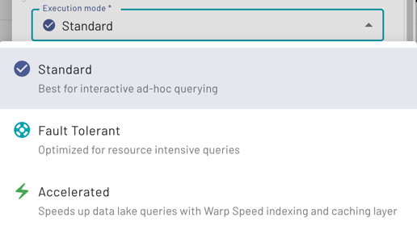

Clusters #
A cluster in Starburst Galaxy provides the resources to run queries against numerous catalogs. You can access the data exposed by the catalogs with the Query editor or other clients.
Access your clusters at any time by clicking Clusters on the navigation
menu. A sample cluster is included as an installation option.
Starburst Galaxy lets you create, edit, delete, enable, amd disable clusters, and to resume an auto-suspended cluster.
Concepts #
Creating and managing clusters is an essential task for a platform administrator in Starburst Galaxy. A cluster with the desired catalogs is required for a data consumer to use SQL statements in client tools to analyze the available data. The following concepts are important to understand to perform this work efficiently.
Cluster maximums #
For all clusters, the maximum allowed query processing time is four hours. Longer running queries are terminated. Find relevant tips in the query troubleshooting section.
The number of clusters allowed per account is limited to 30 by default. Contact Starburst support if you need a higher limit.
Cloud provider region and catalogs #
Catalogs define the connection details to access a
data source. Any data source is located in a specific cloud region of a specific
cloud provider. For example, your Cloud SQL for MySQL database is hosted in the
us-east1 region of Google Cloud.
A cluster can include one or more catalogs. If multiple catalogs are configured, you can query them with SQL using the same client connection. You can also query the data in multiple catalogs within one SQL statement.
A cluster and all its configured catalogs must be located in the same cloud provider and region. This allows for maximum performance and avoids data transfer costs for access across regions or even cloud providers.
Size and scaling #
The size of a cluster determines the number of server nodes, including one coordinator and many workers, used to process queries. A larger cluster, consisting of more nodes, is capable of processing more complex queries, handling more concurrent users, and providing higher performance by using more resources.
The available sizes include Free, X-Small, Small, Medium, Large,
X-Large, and 2X-Large. You can create a cluster with any size, and
change size based on the current needs. Changing size requires a restart of the
cluster. All nodes in a cluster are identical. Best practice is to start with a
smaller size cluster and determine if the cluster is capable of processing all
queries in your workload. Failures in terms of memory, or slow query processing
typically indicate that you should choose a larger size.
For a defined cluster size with different minimum and maximum values, clusters automatically scale up to the maximum number of workers for the configured cluster size when the combined CPU usage of all workers exceeds 60%. Autoscaling adds one or more workers to get the combined CPU usage of all workers below 60%. The autoscaling process takes approximately four minutes to make the first adjustment. If the CPU usage continues to climb and exceeds 60%, the process repeats until the maximum number of workers is reached.
Clusters automatically scale down to the minimum number of workers when the combined CPU usage of all workers drops below 60%. Autoscaling removes one or more workers until CPU usage approaches 60%. The autoscaling process takes approximately 15 minutes to make the first adjustment.
Cluster status and transitions #
A cluster can be in one of the following states:
- Not enabled
- A cluster that is not enabled consists of a small configuration set only. No significant resources are used, and no costs are incurred.
- Starting
- A cluster currently entering the running state.
- Running
- A running cluster consists of a number of server nodes. It continues to be in the running state, while users are submitting queries for processing.
- Suspended
- A suspended cluster consists of a small configuration set, and a mechanism to listen to incoming user request. It does not include any actively running server nodes, and no costs are incurred.
For short durations, you can also see the status Updating if you made an edit to a cluster’s configuration, such as changing its size or auto-suspend time.
A newly created cluster begins un-enabled, and can be enabled in the cluster list.
A running cluster can be manually disabled in the cluster list.
Idle shutdown time #
A running cluster becomes idle when no queries are submitted and all processing
of queries is completed. Idle clusters automatically transition to suspended
status when the configured idle shutdown time is reached. Available idle
shutdown times include 1 minute, 5 minutes, 15 minutes, 30
minutes, and 1 hour.
When a user submits a query to a suspended cluster, the cluster is started, and the query is processed. The user must wait for the cluster to start, which typically takes between one and five minutes.
You can also configure a cluster to Never suspend. This causes the cluster to remain up and running, even if no queries are processed and the cluster is idling. The advantage of this behavior is that any issued query can be processed immediately as there is no wait time until the cluster started. The disadvantage is the increased cost incurred.
The never suspend option is not available for free clusters.
Use cluster scheduling to transition clusters between running and suspended status automatically, based on specified days and times.
Execution mode #
When configuring your cluster, choose between the Standard, Fault tolerant, and Accelerated options from the Execution mode drop-down menu.

Standard execution is a general purpose, ad-hoc analytics mode for queries that require a few minutes to run.
Fault-tolerant execution (FTE) allows a cluster to retry queries or parts of query processing in the event of failures without having to start the whole query from the beginning. For more information, see Fault-tolerant execution.
Accelerated execution enables Starburst Warp Speed’s smart indexing and caching to improve query performance. For more information, see Starburst Warp Speed.
Fault-tolerant and accelerated execution modes are not available for the
Free cluster size.
Manage clusters #
You can create, view, and manage clusters in the Clusters pane.
Cluster list #
The cluster list displays the following information about each cluster:
- Name: The name of the cluster, used to identify a cluster in the user interface as well as in the connection string for clients.
- Status: The current status of the cluster.
- Quick actions: Allows you to resume running an auto-suspended cluster.
- Execution mode: Displays the type of cluster: Standard, Fault-tolerant, or Accelerated.
- Enabled: A toggle switch to enable or disable a cluster.
- Connect: Click Connection info to view and copy the connection strings required to connect to this cluster from various client programs.
The end of each row has an options menu with the following actions:
- Query: Opens the query editor using the current cluster as context.
- Resume: For suspended clusters only, lets you resume the cluster.
- Edit cluster: To edit the cluster.
- Change owner To change the owner of the cluster to a different role.
- View cluster activity To view the recent activity of a running cluster.
- Delete cluster: To delete the cluster.
The Name, Status, and Execution mode columns can be sorted. Click the column name to sort the column; click the name again to reverse the sort order. The up or down arrows show ascending or descending sort order.
Create a cluster #
To create a cluster, click Create cluster and proceed with the following steps:
-
Provide a meaningful name for users as the Cluster name.
-
Add one or more Catalogs to provide access to the configured data sources in the cluster. The catalogs must use the same cloud provider and region as the cluster itself.
-
Choose a Cloud provider region for deploying and running the cluster.
-
In the Cluster type section:
-
In the Execution mode drop-down menu, select from the available cluster types: Standard, Fault-tolerant, or Accelerated.
-
Select a size for this cluster from the Cluster size drop-down menu.
-
Optionally select a range of minimum and maximum number of worker nodes to create a Custom size, as described in Size and scaling.
-
Select a value from the Idle shutdown time drop-down menu to enable an automatic suspension time for the cluster becoming inactive, as described in Idle shutdown time. You can also choose Never suspend to disallow automatic suspension.
-
-
Expand Advanced settings.
Optionally use the Grant access to users with roles drop-down menu to select roles to have access to the cluster. You can specify roles later, in which case, the new cluster has access only from the Public role.
-
Click Create cluster to save the configuration to the cluster list.
If desired, proceed to enable the cluster and configure a cluster schedule.
Search clusters #
Use the search field to find clusters by cluster name and catalog names.
Enable a cluster #
Click Enable in the cluster list.
An enabled cluster can automatically transition between running and suspended status depending on a defined cluster schedule.
Disable a cluster #
Disabling a cluster stops the cluster and immediately terminates all currently running queries.
In the Enabled column of the cluster list, click the enabled toggle to off. You are prompted to confirm disabling the cluster. The Status columns displays Not enabled.
A cluster not currently enabled must be re-enabled manually. Any defined cluster schedule does not automatically enable a cluster.
To delete a cluster, you must disable it first.
Edit a cluster #
To open the Edit cluster panel, click the menu, and select Edit cluster.
You can edit the cluster name, catalogs, cluster type, execution mode, and the idle shutdown time without affecting your users or any running queries. How changes take effect depends on the status of your cluster.
Not enabled: Configuration changes for a disabled cluster are applied immediately and are displayed in the cluster list. The new configuration is used when the cluster is re-enabled.
Suspended: Configuration changes for a suspended cluster are applied immediately and are displayed in the cluster list. The new configuration is used when the cluster is resumed.
Running: Configuration changes for a running cluster opens a dialog offering the following choices:
-
Yes, update now: If you choose this option, queries running on the existing cluster finish, and a new cluster with the updated configuration is used for all new queries.
-
No, update later: If you choose this option, an update button appears under Quick actions in the cluster list. Click the button once you are ready to apply the changes. Until then, the cluster continues to run using the current configuration. If you have an idle shutdown time configured, the cluster automatically transitions to suspended status once that time arrives. The new configuration is used when the cluster is resumed.
Right after editing a cluster’s configuration, its status can show as Updating until the configuration changes are complete.
Delete a cluster #
Before you can delete a cluster, you must disable the cluster in the cluster list. After the cluster is no longer enabled, click the options menu, then choose Delete cluster. Alternatively, you can open the edit cluster panel and click Delete cluster.
Is the information on this page helpful?
Yes
No
Is the information on this page helpful?
Yes
No